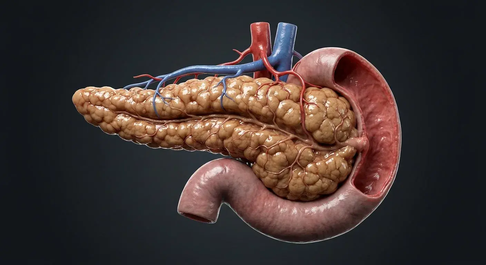

ORGAN → UNDER THE LENS
Pancreatic acini and endocrine islet
Tap to compare the organ region with a tissue-level teaching illustration.
Read about Islets of Langerhans ↓Curled into the C-shaped loop of the duodenum behind the stomach, the pancreas works a double shift as both an enzyme factory for digestion and a hormone regulator. In this illustrated guide to human pancreas anatomy, we examine 21 documented structures—including head, neck, body, tail—linking regional topography, tissue architecture, physiological mechanisms, and clinical reasoning.

TailBodyMain pancreatic ductNeckHeadAccessory duct (of Santorini)Minor duodenal papillaHepatopancreatic ampullaPancreaticoduodenal grooveUncinate processMajor duodenal papillaSphincter of OddiCurled into the C-shaped loop of the duodenum behind the stomach, the pancreas works a double shift as both an enzyme factory for digestion and a hormone regulator. The pancreas is both an exocrine and an endocrine organ. Acinar cells package trypsinogen, lipase and amylase into zymogen granules and secrete them into the pancreatic duct, which joins the common bile duct at the hepatopancreatic ampulla; bicarbonate-rich fluid from duct cells neutralises gastric acid. Scattered among the acini, the islets of Langerhans secrete insulin (beta cells), glucagon (alpha), somatostatin (delta) and pancreatic polypeptide directly into blood, minute-to-minute control of glucose. Within the human body, the pancreas (Pancreas) is situated in retroperitoneal, across L1–L2 behind the stomach, receives arterial perfusion via splenic artery + pancreaticoduodenal arcades, and is innervated by vagus + splanchnic via coeliac plexus.
The head (Caput pancreatis) is the broad end nestled in the C-loop of the duodenum, with the uncinate process hooking behind the superior mesenteric vessels. Physiologically, the head houses much of the exocrine tissue and the terminal duct. The neck (Collum pancreatis) is the short constriction in front of the portal vein's formation. Physiologically, the neck governs landmark separating head from body; the portal vein forms behind it. The body (Corpus pancreatis) is the middle third crossing the aorta and vertebral body, behind the stomach in the lesser sac. Physiologically, the body carries the duct and splenic vessels along its borders. The tail (Cauda pancreatis) is the narrow left end reaching the splenic hilum between the layers of the splenorenal ligament. Physiologically, the tail contains a high density of islets. The main pancreatic duct (Ductus pancreaticus) runs the length of the gland from tail to head, joining the common bile duct at the ampulla in the second part of duodenum. Physiologically, the main pancreatic duct delivers ~1.5 L of enzyme- and bicarbonate-rich juice daily. The accessory duct (of Santorini) (Ductus pancreaticus accessorius) is an inconstant second duct opening at the minor duodenal papilla above the main one. Physiologically, the accessory duct (of Santorini) provides alternative drainage, mainly of the head.
Clinically, regarding the head, a tumour here compresses the common bile duct, causing painless obstructive jaundice and a palpable gallbladder (Courvoisier's law). From a diagnostic standpoint, in the neck, it is the transection line in a Whipple procedure and in distal pancreatectomy. In clinical pathology involving the body, it lies against the splenic vein — thrombosis of that vein from pancreatitis causes isolated gastric varices. Medical evaluation of the tail also notes that it is easily injured during splenectomy, causing a postoperative pancreatic fistula.
Connected study pathways in this atlas: Liver, Stomach & intestines, Spleen.
These are educational cutaways, not literal magnifications of an organ pixel or laboratory slides. A ring marks the approximate tissue region; part-specific lines appear only where identifiable.
Tap to compare the organ region with a tissue-level teaching illustration.
Read about Islets of Langerhans ↓These 21 structures describe anatomy related to the chapter’s regional illustration. Each entry separates location, function and a clinical point.
The broad end nestled in the C-loop of the duodenum, with the uncinate process hooking behind the superior mesenteric vessels.
What it doesHouses much of the exocrine tissue and the terminal duct.
Clinical connectionA tumour here compresses the common bile duct, causing painless obstructive jaundice and a palpable gallbladder (Courvoisier's law).
The short constriction in front of the portal vein's formation.
What it doesLandmark separating head from body; the portal vein forms behind it.
Clinical connectionIt is the transection line in a Whipple procedure and in distal pancreatectomy.
The middle third crossing the aorta and vertebral body, behind the stomach in the lesser sac.
What it doesCarries the duct and splenic vessels along its borders.
Clinical connectionIt lies against the splenic vein — thrombosis of that vein from pancreatitis causes isolated gastric varices.
The narrow left end reaching the splenic hilum between the layers of the splenorenal ligament.
What it doesContains a high density of islets.
Clinical connectionIt is easily injured during splenectomy, causing a postoperative pancreatic fistula.
Runs the length of the gland from tail to head, joining the common bile duct at the ampulla in the second part of duodenum.
What it doesDelivers ~1.5 L of enzyme- and bicarbonate-rich juice daily.
Clinical connectionA "double duct sign" (dilated pancreatic and bile ducts) on imaging suggests a head tumour.
An inconstant second duct opening at the minor duodenal papilla above the main one.
What it doesProvides alternative drainage, mainly of the head.
Clinical connectionPancreas divisum — failure of the duct systems to fuse — drains most secretions through this narrow route and can cause recurrent pancreatitis.
The common channel of bile and pancreatic ducts, guarded by the sphincter of Oddi at the major duodenal papilla.
What it doesGates the entry of bile and pancreatic juice into the duodenum.
Clinical connectionA gallstone impacted here causes both biliary colic and acute pancreatitis.
1–1.5 million microscopic clusters of alpha (glucagon), beta (insulin, amylin), delta (somatostatin) and PP cells, richly capillarised.
What it doesMinute-to-minute control of blood glucose, plus intermediary metabolism.
Clinical connectionAutoimmune destruction of beta cells causes type 1 diabetes; resistance to insulin with beta-cell exhaustion causes type 2.
Grape-like clusters of enzyme-packed cells draining into centroacinar cells and ductules.
What it doesSecrete the pro-enzymes for digesting protein, fat and carbohydrate.
Clinical connectionPremature activation of trypsin inside acinar cells is the initiating event of acute pancreatitis.
Hook-shaped pancreatic head extension passing posterior to superior mesenteric vessels.
What it doesCompletes deep head contour around the mesenteric root.
Clinical connectionA mass may involve mesenteric vessels.
Anatomical interface where pancreatic head contacts the duodenal curve.
What it doesRelates gland secretions to duodenal entry.
Clinical connectionInflammation here can affect both organs.
Small mucosal opening receiving the accessory pancreatic duct when patent.
What it doesProvides an accessory pancreatic drainage route.
Clinical connectionDrainage pattern varies with duct fusion.
Mucosal projection receiving ampulla or pancreatic and bile duct openings.
What it doesDelivers bile and pancreatic juice to descending duodenum.
Clinical connectionGallstones at this level may obstruct both ducts.
Smooth-muscle complex surrounding terminal biliary and pancreatic outflow.
What it doesControls flow into duodenum and limits reflux.
Clinical connectionDysfunction can mimic obstructive pain.
Cluster of enzyme-secreting serous cells surrounding a small lumen.
What it doesReleases digestive enzyme precursors into duct system.
Clinical connectionAcinar injury contributes to pancreatitis.
Pale cells at acinus-to-intercalated-duct transition.
What it doesStart ductal bicarbonate-rich secretion.
Clinical connectionThey distinguish pancreatic from salivary acini histologically.
Smallest exocrine duct receiving secretion from acinar lumen.
What it doesConveys and modifies pancreatic juice.
Clinical connectionDuct obstruction impairs exocrine drainage.
Pancreatic islet endocrine cells concentrated variably within islets.
What it doesSecrete insulin in response to glucose.
Clinical connectionLoss or dysfunction contributes to diabetes.
Islet endocrine cells intermingled with other endocrine populations.
What it doesRelease glucagon during falling glucose.
Clinical connectionGlucagon raises hepatic glucose availability.
Islet cells producing somatostatin.
What it doesModulate neighboring endocrine and exocrine secretion.
Clinical connectionIslet composition is not fixed across the gland.
Periacinar and periductal mesenchymal cells activated by injury.
What it doesRegulate extracellular matrix turnover.
Clinical connectionPersistent activation contributes to pancreatic fibrosis.
Short answers grounded in the structures described above. Use the illustrated guide for anatomical context.
Its exocrine tissue releases digestive enzymes into the small intestine. Endocrine islets release hormones such as insulin and glucagon into the blood. Structurally, the islets of Langerhans (Insulae pancreaticae) comprises 1–1.5 million microscopic clusters of alpha (glucagon), beta (insulin, amylin), delta (somatostatin) and PP cells, richly capillarised. Physiologically, the islets of Langerhans governs minute-to-minute control of blood glucose, plus intermediary metabolism.
It lies behind the stomach across the upper abdomen. Its head sits near the duodenum, while its tail reaches toward the spleen. The head (Caput pancreatis) is the broad end nestled in the C-loop of the duodenum, with the uncinate process hooking behind the superior mesenteric vessels. Physiologically, the head houses much of the exocrine tissue and the terminal duct.
The broad end nestled in the C-loop of the duodenum, with the uncinate process hooking behind the superior mesenteric vessels. Functionally, it houses much of the exocrine tissue and the terminal duct. Structurally, the uncinate process comprises hook-shaped pancreatic head extension passing posterior to superior mesenteric vessels. Physiologically, the uncinate process governs completes deep head contour around the mesenteric root.
Runs the length of the gland from tail to head, joining the common bile duct at the ampulla in the second part of duodenum. Functionally, it delivers ~1.5 L of enzyme- and bicarbonate-rich juice daily. Medical evaluation of the main pancreatic duct also notes that a "double duct sign" (dilated pancreatic and bile ducts) on imaging suggests a head tumour.
Functionally, it secrete the pro-enzymes for digesting protein, fat and carbohydrate. Grape-like clusters of enzyme-packed cells draining into centroacinar cells and ductules. Clinically, regarding the acinar cells & ductules, premature activation of trypsin inside acinar cells is the initiating event of acute pancreatitis.
Follow these connected structures and body systems in the illustrated atlas.
 LiverFed by both the nutrient-rich portal vein and oxygen-rich hepatic artery, the liver's hexagonal lobules synthesize proteins, detoxify blood, and secrete bile.↗
LiverFed by both the nutrient-rich portal vein and oxygen-rich hepatic artery, the liver's hexagonal lobules synthesize proteins, detoxify blood, and secrete bile.↗ Stomach & intestinesA continuous muscular digesting and absorbing tube from the acid-churning stomach through the villus-lined small intestine to the water-reclaiming colon.↗
Stomach & intestinesA continuous muscular digesting and absorbing tube from the acid-churning stomach through the villus-lined small intestine to the water-reclaiming colon.↗ SpleenTucked beneath the left ribs, the spleen pairs immune white-pulp lymphoid follicles with filtering red-pulp cords that recycle aging red blood cells.↗
SpleenTucked beneath the left ribs, the spleen pairs immune white-pulp lymphoid follicles with filtering red-pulp cords that recycle aging red blood cells.↗ Thyroid glandWrapped like a butterfly around the upper trachea, thyroid follicles store iodinated thyroglobulin colloid to pace basal metabolism, with four parathyroids behind.↗
Thyroid glandWrapped like a butterfly around the upper trachea, thyroid follicles store iodinated thyroglobulin colloid to pace basal metabolism, with four parathyroids behind.↗General anatomy references and related source chapters for continued study. These links do not make the digital illustrations clinical images or certify every anatomical variant.
This educational page is not medical advice and has not undergone formal clinical peer review. Spotted an error? Contact the editor.
Open the realistic interactive plate, label lines, focus view and self-test.